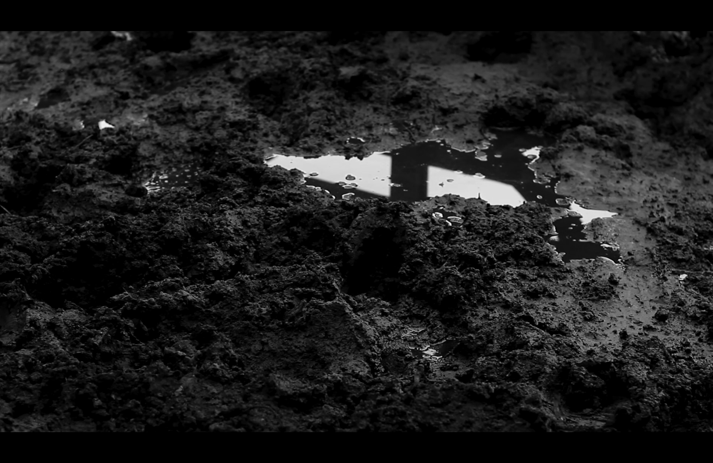

Pampa Stalingrado
Dirección, producción y Edición



11' PAMPA STALINGRADO
Videopoestía realizada en conjunto por el colectivo Apurí a partir de la obra de Flavia Soldano
Pampa Stalingrado, Flavia Soldano
Editorial: LAMAS-MEDULA, 2017
Equipo técnico
Realización integral: Apurí (Zoe Fahler, Paloma Orlandini Castro, Isabel Yumatle)
Edición y diseño sonoro: Zoe Fahler